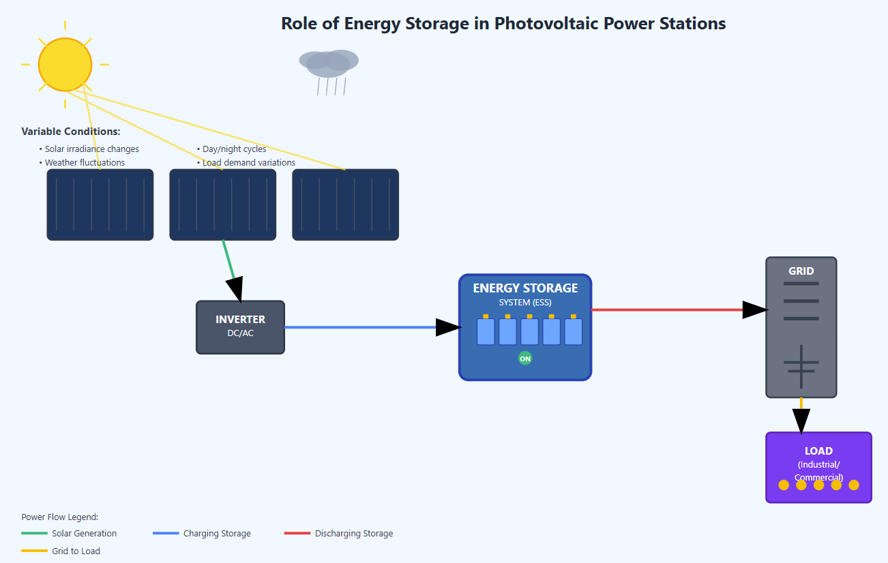
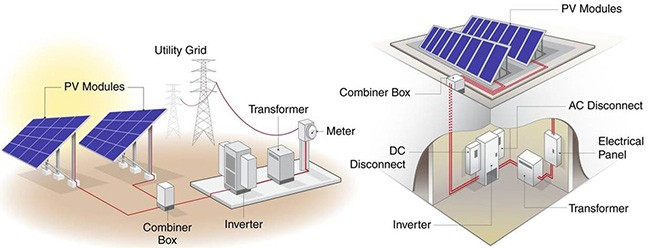
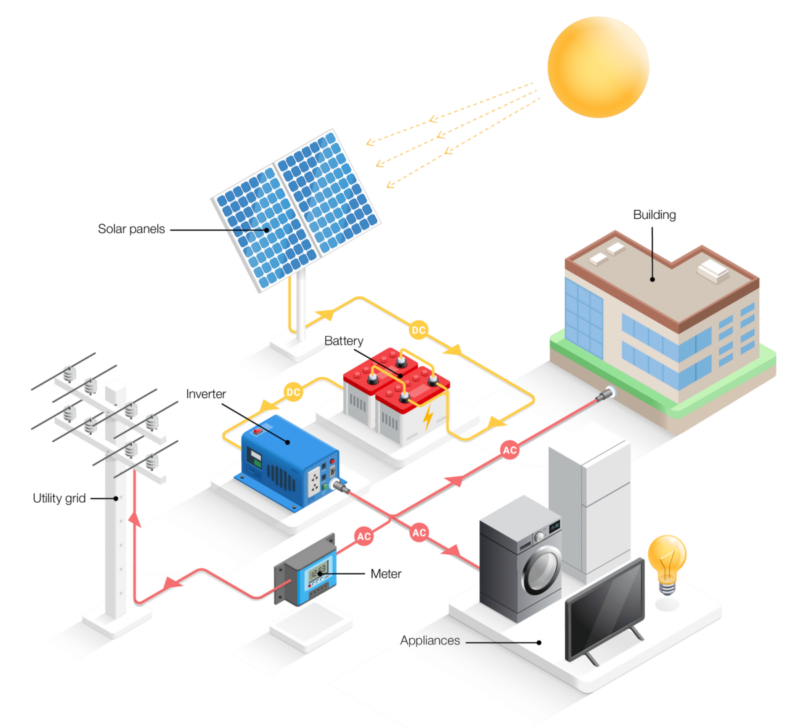
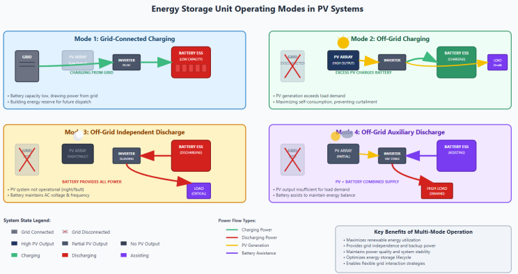
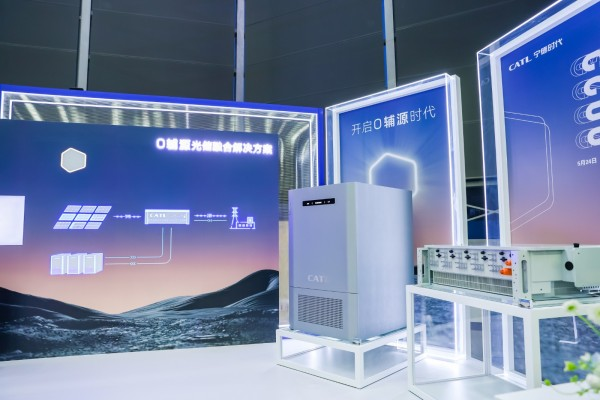
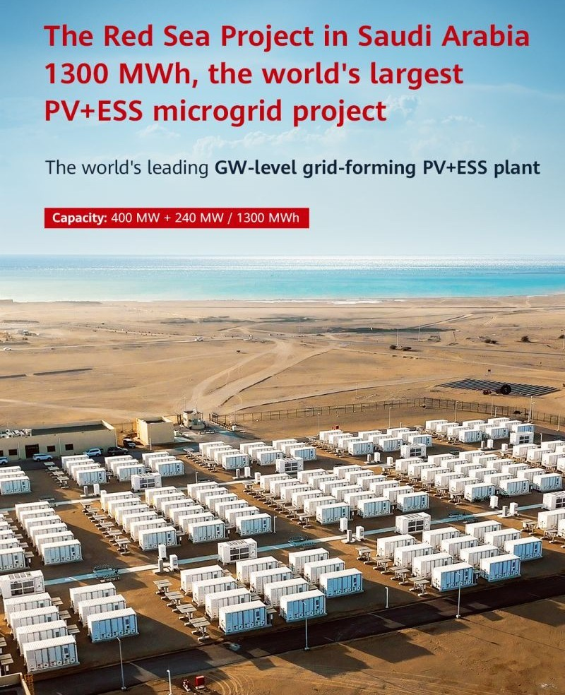
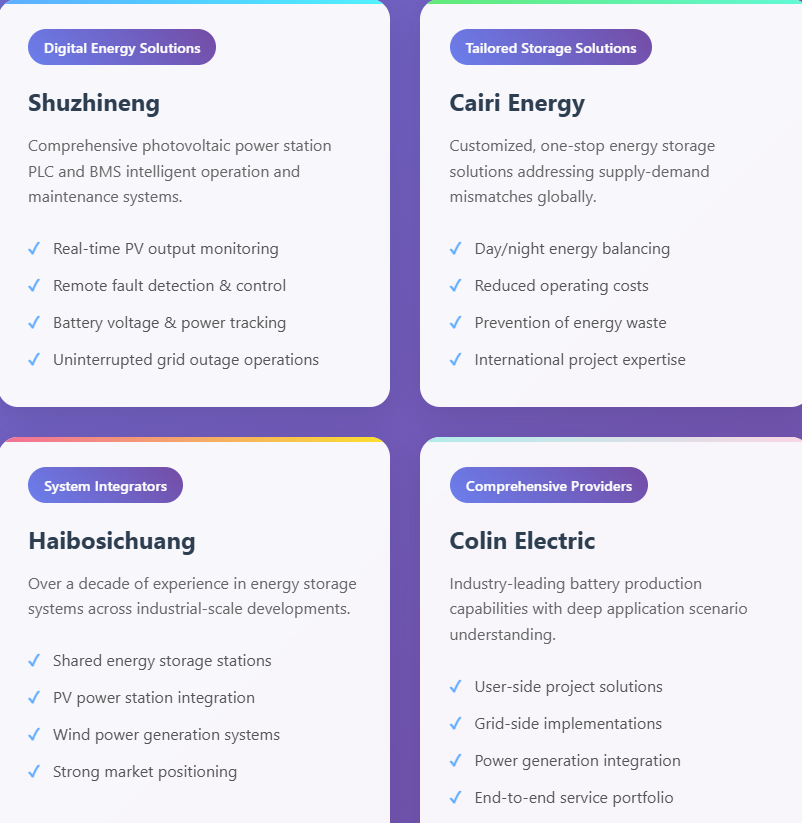
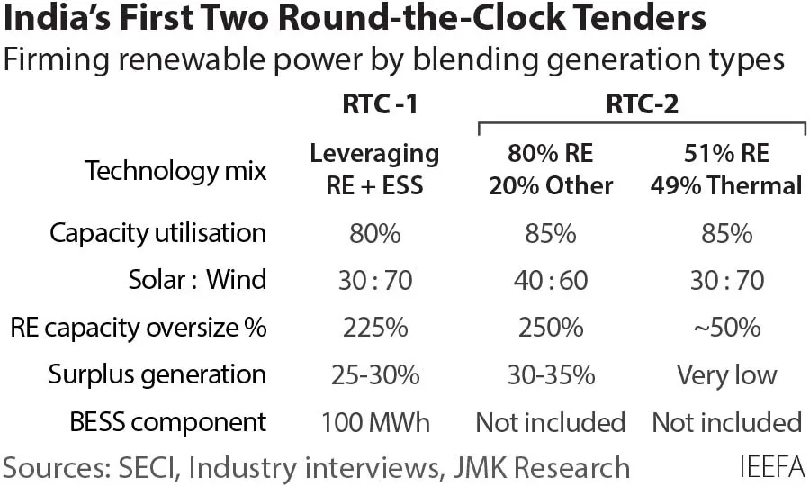
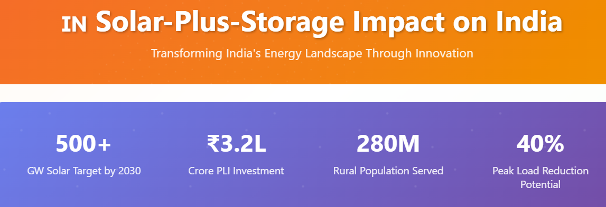
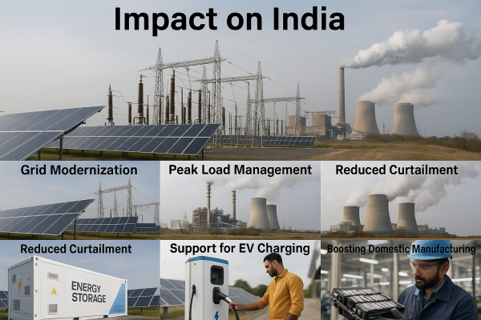

Photovoltaic (PV) power generation has emerged as a cornerstone of the global clean energy transition, offering a sustainable alternative to fossil fuels. However, the inherent characteristics of solar power – its intermittency and variability – pose significant challenges to grid stability, economic operation, and power quality if not properly managed. This is particularly true for systems without integrated energy storage. Without storage, standalone PV installations can lead to adverse impacts on line flow, system protection, grid economics, power quality fluctuations (voltage spikes, drops), and operational scheduling. Therefore, both centralized utility-scale and distributed rooftop PV systems increasingly require energy storage to unlock their full potential.
This article delves into the specific problems that PV power stations equipped with energy storage can solve, highlighting the critical role these integrated solutions play in ensuring a reliable and sustainable energy future, especially within the context of India's ambitious renewable energy goals.
The Indispensable Role of Energy Storage in Photovoltaic Power Stations
Energy storage systems (ESS) are not merely add-ons to PV installations; they are integral components that fundamentally transform the operational characteristics and grid integration capabilities of solar power. Here’s how ESS empowers PV power stations:

- Ensuring System Stability: Photovoltaic output power often exhibits a significant mismatch with load curves, and both are subject to unpredictable fluctuations due to weather changes and time of day. Energy storage acts as a buffer, absorbing excess energy during periods of high generation and releasing it when generation dips or demand rises. This buffering capability allows the system to operate at a more stable output level, even when grid loads or solar irradiance fluctuate rapidly. This is crucial for maintaining grid frequency and voltage within acceptable limits.
- Energy Backup and Continuity: Energy storage provides essential backup and transitional power. For instance, at night, on cloudy or rainy days, or during maintenance, when the PV array cannot generate electricity, the stored energy can seamlessly take over, ensuring continuous power supply to the load. The capacity of the energy storage depends directly on the anticipated duration and magnitude of the backup power demand.
- Improving Power Quality and Reliability: The grid is susceptible to various disturbances, including voltage spikes, sags, and frequency deviations. An integrated energy storage system can actively mitigate these disturbances, preventing them from significantly impacting the system and connected loads. By injecting or absorbing reactive power, ESS can help maintain stable voltage levels, filter out harmonics, and ensure the overall quality and reliability of the power output, which is vital for sensitive industrial loads and grid stability.
Architecture of a PV Grid-Connected System with Energy Storage
A typical grid-connected PV power station with an integrated energy storage system is a sophisticated power generation unit designed for optimal performance and grid interaction. The core components include:

- Photovoltaic Module Arrays: Convert sunlight into DC electricity.
- Photovoltaic Controller: Manages the power flow from the PV array, directing it to the load, battery charging, or grid.
- Battery Packs: Store electrical energy in chemical form.
- Battery Management System (BMS): Monitors and manages the health, safety, and performance of the battery pack.
- Inverters (Power Conversion Systems - PCS): Convert DC power from PV and batteries into AC power for grid connection or AC loads.
- Joint Control and Dispatching System: The overarching intelligence that orchestrates the operation of all components, optimizing energy flow based on grid signals, load demand, and operational goals.
The overall system architecture ensures efficient conversion, storage, and dispatch of solar energy.
Working Process: A Symphony of Energy Management
The integrated PV + Energy Storage system operates through a coordinated interplay of its components:

- Photovoltaic Module Array: Utilizes the photovoltaic effect to convert light energy into electrical energy, which is then used to charge the lithium battery pack or directly supply power to loads via the inverter.
- Photovoltaic Controller: Dynamically adjusts the system's operation based on sunlight intensity and load requirements. It can send adjusted power directly to DC or AC loads, or, when there's excess energy, direct it to the battery pack for storage. Conversely, if PV generation is insufficient, the controller draws power from the battery to meet load demands, ensuring continuous and stable operation.
- Grid-connected Inverter System: Consists of one or more inverters that convert the DC power from the batteries and/or PV array into AC power. This AC power can then be directly supplied to user-side low-voltage grids or, via step-up transformers, to high-voltage power grids. These inverters are bi-directional, allowing both charging from and discharging to the grid.
- Lithium Battery Pack: Serves the dual critical roles of energy regulation and load balancing. It stores excess electrical energy from the PV system as chemical energy, making it available for use when power supply from the PV array is insufficient or when grid demand requires it.
- Energy Storage Unit Operating Modes: The ESS can operate in various modes, adapting to the specific needs of the PV power generation system:

- Grid-connected charging mode: When the battery capacity is low, the ESS can draw power from the grid to charge, providing an energy reserve for potential off-grid operation or future dispatch.
- Off-grid charging mode: In off-grid scenarios, if PV generation exceeds immediate load demand, the excess energy charges the battery. This is particularly useful for maximizing self-consumption and preventing curtailment when grid dispatch might restrict PV output.
- Off-grid independent discharge mode: If the PV unit stops working (e.g., at night or due to a fault) and cannot provide voltage and frequency support, the battery alone can supply the required power to the load and maintain stable AC bus voltage and frequency for the off-grid system.
- Off-grid auxiliary discharge mode: When the PV unit's output is insufficient to meet load demand but can still provide stable AC bus voltage and frequency, the battery energy storage unit discharges in assistance to maintain the system's energy balance.
Real-World Applications: PV + Energy Storage in Action
The practical benefits of integrating PV with energy storage are evident across diverse applications:
- Enterprise Electricity Consumption (Commercial & Industrial - C&I): For factories and businesses with their own photovoltaic systems, PV energy storage solutions offer significant advantages. For example, a construction project in Shenzhen utilized a distributed "photovoltaic power generation + energy storage" system. This met the project department's electricity needs during low-peak periods, demonstrating effective energy conservation, emission reduction, and green environmental protection. The system installed 145 PV modules on temporary roofs and parking sheds, generating 84.1 kW and reducing carbon dioxide emissions by approximately 8,900 kilograms monthly. Such deployments not only reduce daily operating costs and electricity burdens but also showcase a commitment to sustainability.

2. Smart Grid and Infrastructure Development (e.g., Taiwan Area): Demonstration substations integrating 400 kVA transformers, 215 kWh distributed energy storage, 140 kW distributed photovoltaics, and 150 kW charging piles exemplify a holistic approach. By integrating cloud energy storage technology with the main distribution network, these projects create "smart substations" that encompass all elements of source (PV), grid, load, storage, and charging, paving the way for more resilient and intelligent urban energy infrastructure.
3. Large-Scale International Projects: Major global energy players are implementing vast solar-plus-storage projects. An example is a solar energy storage microgrid project in the Red Sea New City, Saudi Arabia, featuring 400MW of PV generation and 1.3GWh of electrochemical energy storage. This power plant has successfully provided over 1 billion kWh of green electricity, showcasing the immense potential of such integrated systems for large-scale, reliable renewable power supply.

Innovators Driving PV + Energy Storage Solutions
Several companies are at the forefront of developing and deploying advanced PV + Energy Storage solutions:
- Digital Energy Solution Providers: Companies like Shuzhineng offer comprehensive photovoltaic power station PLC (Programmable Logic Controller) and BMS (Battery Management System) intelligent operation and maintenance systems. These systems enable online monitoring, fault alarms, remote control, and remote maintenance of PV energy storage equipment, establishing efficient and practical O&M management. This includes real-time monitoring of PV output, energy consumption, and equipment status, as well as remote control for rapid fault detection. For energy storage, continuous monitoring of battery voltage, power, and storage data ensures uninterrupted operations, even during grid outages.
- Tailored Energy Storage Solutions: Companies such as Cairi Energy excel in providing customized, one-stop energy storage solutions. For instance, they have addressed challenges for Bulgarian customers who faced excess electricity during the day from PV and reliance on grid purchases at night. By integrating storage, they mitigate the mismatch between supply and demand, preventing energy waste and reducing operating costs.

3. Experienced System Integrators: Haibosichuang, with over a decade of experience in energy storage systems, has witnessed the industry's evolution from demonstration to industrial-scale development. They have achieved industrialization and commercialization across various scenarios, including shared energy storage power stations, PV power stations, and wind power generation, establishing a strong market position.
4. Comprehensive Energy Storage Providers: Colin Electric leverages industry-leading energy storage battery cell production capabilities and deep understanding of application scenarios to create highly competitive one-stop energy storage solutions. Their product portfolio spans user-side, grid-side, and power generation-side projects, providing end-to-end solutions for diverse energy needs.
The Indian Imperative: Solar-Plus-Storage for a Resilient Grid
For India, a nation with abundant solar resources and aggressive renewable energy targets, the integration of energy storage with PV is not merely an option but a strategic imperative. The Indian government is actively promoting this integration through various policies:
- Energy Storage Obligation (ESO): Mandating distribution licenses to procure a certain percentage of their renewable energy from storage-integrated projects (e.g., 1% for FY 2023-24, increasing to 4% by FY 2029-30).

- Advisory on Co-locating ESS with Solar Projects: The Ministry of Power Govt of India advisory recommends that new solar projects include a minimum of two hours of energy storage, equivalent to 10% of the installed solar capacity. This aims to enhance grid stability, improve cost efficiency by better utilizing transmission infrastructure during non-solar hours, and ensure a steady energy supply.
- Firm and Dispatchable Renewable Energy (FDRE) and Round-the-Clock (RTC) Tenders: These tenders explicitly facilitate storage integration to provide reliable, dispatchable power from renewables, addressing the intermittency challenge directly.

- Viability Gap Funding (VGF): Schemes like the VGF for battery energy storage systems (BESS) are designed to bridge financial gaps and make such projects more attractive for investors.
Impact on India:

- Grid Modernization: Solar-plus-storage solutions are critical for modernizing India's grid infrastructure, which was traditionally designed for conventional fossil fuel-based generation. They enable dynamic grid management, frequency regulation, and voltage control.
- Peak Load Management: India experiences significant peak electricity demand, often in the evenings when solar generation declines. Stored solar energy can be discharged during these peak hours, reducing reliance on expensive and polluting fossil fuel-based peaking power plants.
- Reduced Curtailment: By storing excess solar power instead of curtailing it during periods of oversupply, India can maximize the utilization of its vast solar capacity.

- Decentralized Energy Security: For remote areas and industries in India facing unreliable grid supply, distributed solar-plus-storage systems can provide localized energy independence and improve power quality.
- Support for EV Charging: As India pushes for electric vehicle adoption, integrating solar with storage at charging stations ensures clean, reliable, and potentially lower-cost power for EVs, alleviating pressure on the existing grid.
- Boosting Domestic Manufacturing: The push for integrated solutions fuels demand for advanced battery technologies, incentivizing domestic manufacturing under initiatives like the PLI scheme for ACC batteries, thereby reducing import dependence and creating local jobs.
In conclusion, the integration of energy storage is no longer optional for photovoltaic power generation; it is fundamental to realizing its full potential. By solving critical issues of stability, reliability, and power quality, energy storage enables solar power to become a truly dispatchable and dependable energy source. For India, leveraging these advanced PV + Energy Storage solutions is key to achieving its ambitious renewable energy targets, enhancing grid resilience, and powering a sustainable future for its rapidly growing economy.